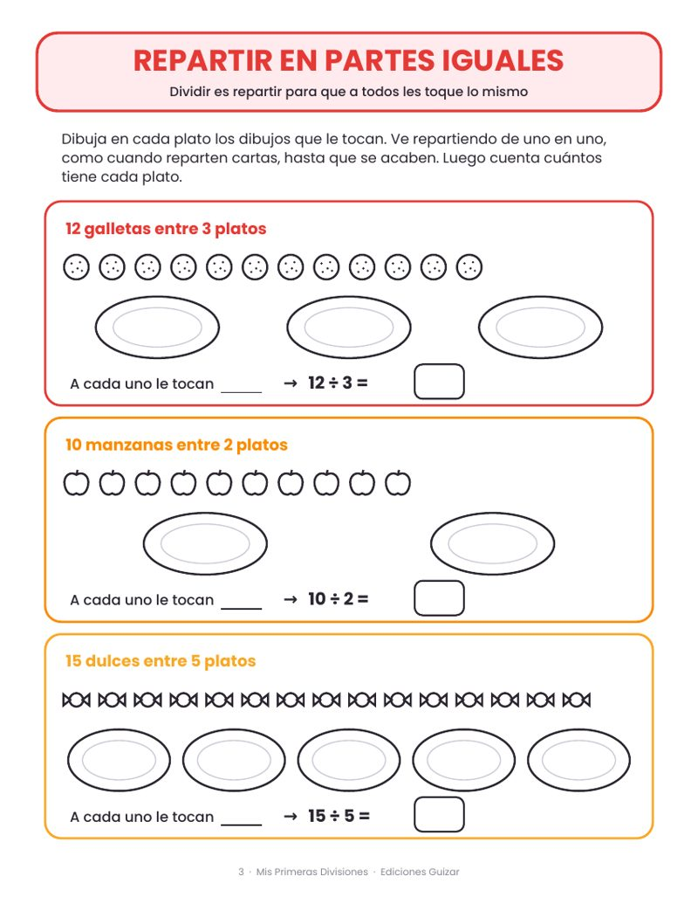
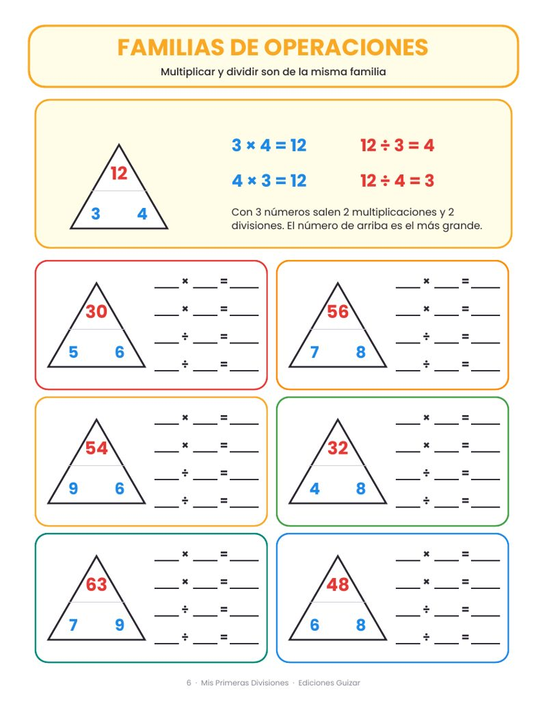
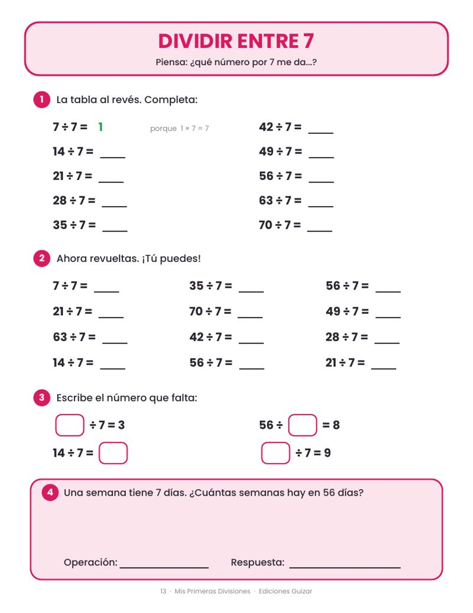
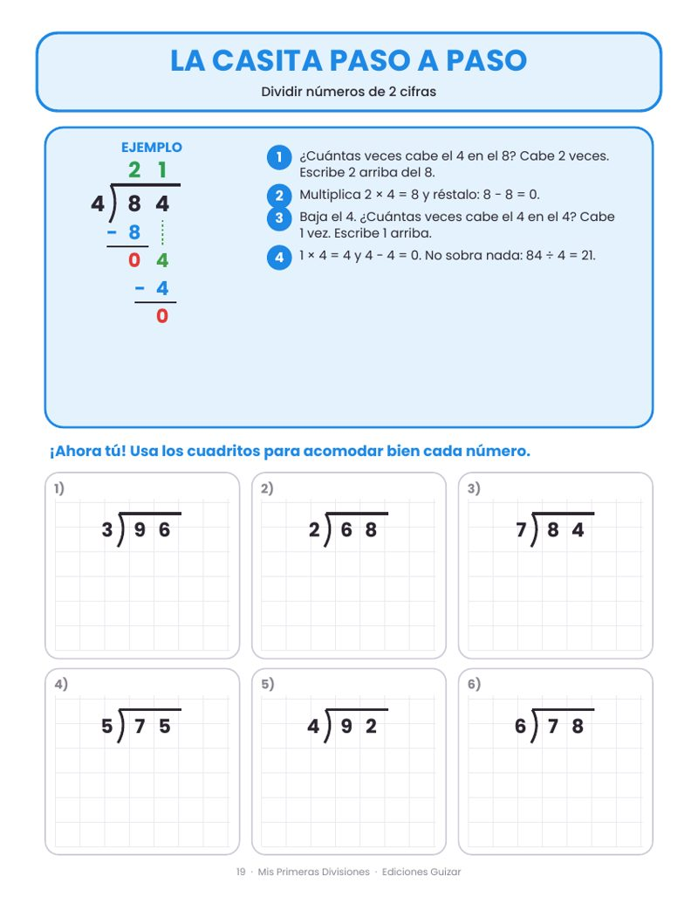
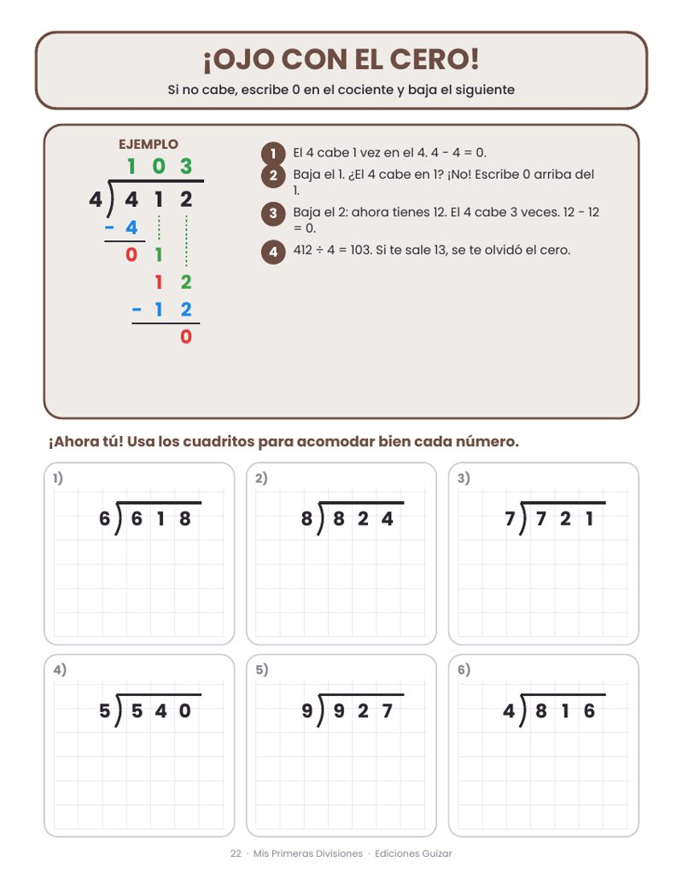
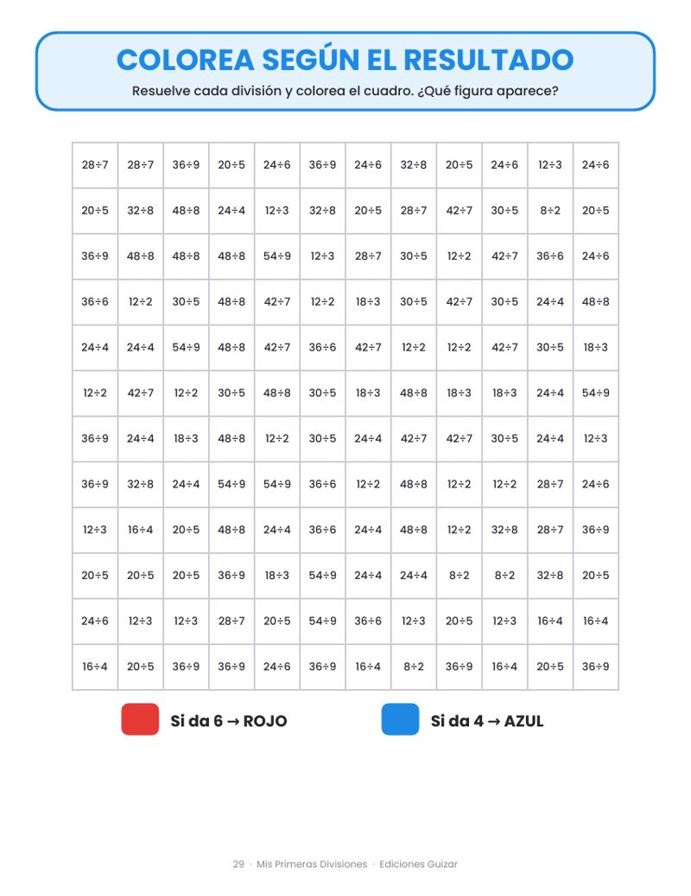

➗ 33 páginas en PDF
- Primero entiende: repartir, agrupar y familias de operaciones
- Dividir entre 2 al 10: una página por tabla
- Residuo: qué hacer cuando sobra
- La casita paso a paso, con 3 cifras y el cero
- Problemas, carreras de 1 minuto, diploma y respuestas
$49 MXN
Comprar con Mercado Pago
Tarjeta, OXXO o SPEI. Al aprobarse tu pago, descargas tu PDF al instante e imprímelo las veces que quieras.
¿Todavía batalla con las tablas? Llévate Tablas de multiplicar + Divisiones por $79 (en vez de $98).
🛒 Quiero los 2 cuadernos · $79
🛒 Quiero los 2 cuadernos · $79
Mira algunas páginas






¿Qué incluye?
- Página "¡Hola!" con nombre del niño y estrellas para marcar su avance
- Repartir y agrupar con dibujos: entiende qué es dividir antes de hacer cuentas
- Familias de operaciones y las partes de la división (dividendo, divisor, cociente y residuo)
- 9 páginas para dividir entre 2, 3, 4… hasta 10: la tabla al revés, revueltas, número que falta y un problema
- Divisiones con residuo, con dibujos y con números
- La casita explicada paso a paso: 2 cifras, con residuo, 3 cifras y el famoso cero en el cociente
- Comprueba tu división, 12 problemas de la vida diaria, 2 carreras de 1 minuto, repaso mixto y un dibujo secreto para colorear
- Diploma, consejos para papás y maestros, y todas las respuestas
¿Cómo funciona?
- Compra con Mercado Pago (tarjeta, OXXO o transferencia).
- Al aprobarse el pago, descargas tu PDF en ese momento.
- Imprime en tamaño carta, a color o en blanco y negro.
- Una página al día, de 15 a 20 minutos. En poco más de un mes ya divide solito.
¿Ya compraste y cerraste la página? Recupera tu descarga aquí